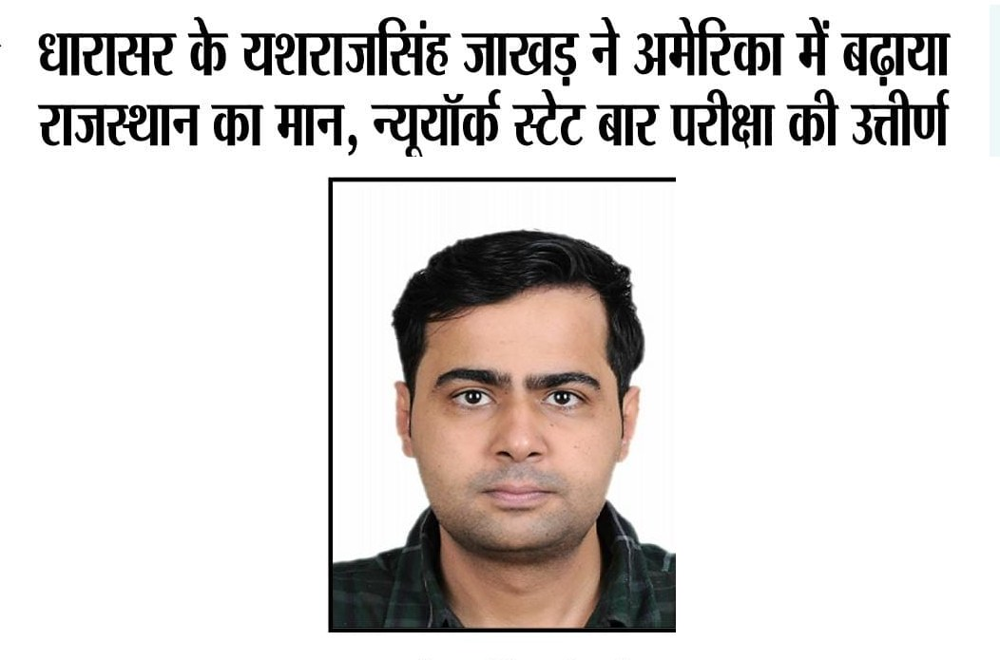

Deccan Herald, 28 September 2026. The Tulu column in print, under the headline "Tulu and a fair test for its status".

The Voice of Bluecity, October 2026. Rajasthan press on the New York bar result, in Hindi. The headline reads: "Dharasar's Yashraj Singh Jakhar raises Rajasthan's standing in America, passes the New York State bar examination".